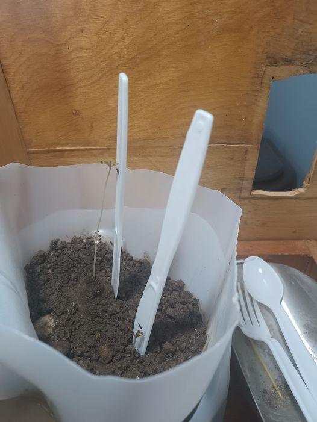
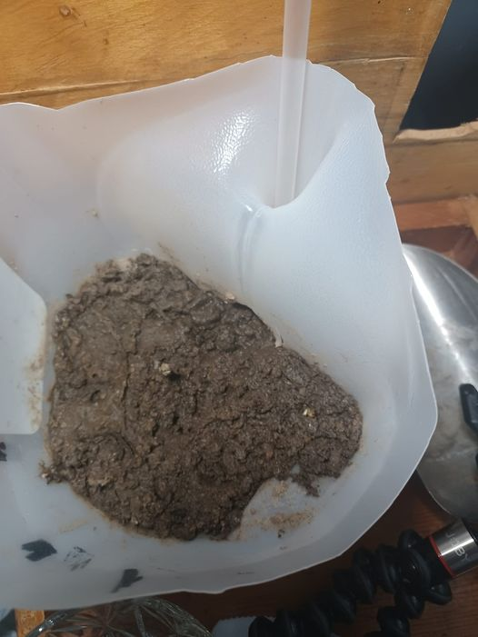
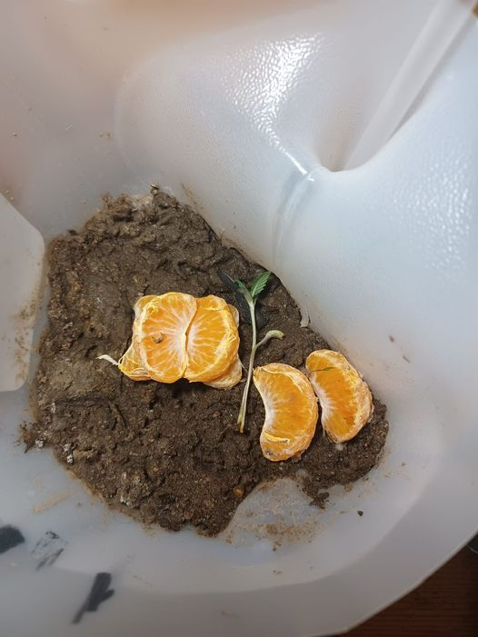

About a week in. Two plants. Free soil, so we caught some friends. Hydroponics system, with banana peel nutrients.
Week 1.5 maybe 2 The little guy is opening up. The growth spurt on the bigger one has slowed. Like I mentioned hydroponics...I use only natural uhh nutrients. Spinach in the water, banana peels (crushed), ice cubes. The system is self made and just from casual reading they mentioned needing to move the water so I blow into the bottom tank with a straw. Moving the water really helps break down what I put in there. I know I need to make sure I don't gunk it up, but spacing it out between water refills is the plan. The lighting is simple. And it will stay that way for these plants. Just a simple lamp. I plan to use a second one below when they start growing leaves. I put some organic material in the soil (chicken cartilage). Probably half of what I put in my mouth. Again crushed.
Week 3... So a lot happened this week. I had to leave for a few days. Two days actually. I left the light on that day ovo it was shut off by night time. I plan to buy a timer by my next journey. I came back and the hydroponics system was slanted away from the water so my bigger plant lost the thick full leaf...actually if you look it's no longer on the floor. That's because I damaged the bigger plant while putting on some pants. Between that and the slant in the hydro system it probably lost a lot of water. Uhh it's been a day or two since I've been back...I think it's alive and well. The leaves look brittle but still fresh. The bigger one is tall af...I actually caked some dirt at the base to hide the damage and try to keep it straight. I think I'll hand water the soil around it. The smaller one is super small...and sometimes it feels like it's trying to close up...I don't even know if it can do that. Only like 5 minutes ago I added the plastic knives. That's to brace them a bit.
Alright...well we have a blank slate. So round one failed. I broke the stem by accident and the smaller one kind of just fell out the ground. Round two was me putting two ungerminated seeds in....yea don't do that. Nothing grew....but still might. Round three will begin again with 2 GERMINATED seeds. I really like the way the soil looks. And I grew Round 1 with rocks and all. Probably still has rocks but I've removed a lot of them. So as with Round 2 the plan is super low maintenence growing. Now I understand the importance of germinating. I don't have the proper light bulbs...we'll see if that becomes important. Also the plant matter is in there decaying.
Alright. Week one of grow three...the other two attempts have failed. This one carries the same setup at the first and is working nicely. I germinated the seeds. I accidentally placed one in the center so the distance between them is shitty. Funny...I suffered a broken stem on one of them and went ahead and planted it anyway. Just the very tip. USE A PLATE. Everything else dried. Which is why that stem broke. Another day and they could have died. It's the smaller one...rather it hasn't even stuck out of the ground yet. Another shitty thing is that yesterday I missed sunlight. The bigger one recovered quickly from that...I think they both recovered nicely but we'll see. Also there is another stray green strand sticking out of there. So I noted that I planted some organic material in the soil. When I did that I killed two small non weed plants that were growing in there. I think all the plants are connected.
Week 2 of grow 3. We've got some good progress but also a bit of a scary situation. I popped the shell off the two seedlings. It worked well for one, but the other had like glue left behind so the flower didn't open. It was on there pretty good and it took a few tries to knock it off. I should have left it on...only because it's having the same affect. The other one fell off pretty easily. The one that growing big and tall is the one that a piece of the root fell off. I'm happy about that. So sway and weight were big issues for me. I did a few things to mitigate. The cabinet the plants live atop- I removed the magnets so it freely swings open. I also foot it at the bottom when I take things out of the cabinet. I've reduced unnecessary movement of the plant to 15%. But that also because of the orange pyramid. It's the best I could come up with. But I do notice mold. I like to splash a bit of water on them. So far so good but the smaller plant hasn't moved in several days. The other is taking off.
Alright alright too many domestic issues led to a canceled grow 3. Grow 4 won't start at least until the winter. Notice how the remainder of the shell fell off the plant as well. At least for the seedling stage I would give the tank 10 out of 10.
Well that's it folks. The next grow isn't scheduled. If you check my FB profile page you can see the original posts (and other content)- it was sometime in 2022. But I am full pot head so another is coming. I hope things were clear. I likely rushed a bit. I'm focusing on taking my time in all projects. Toodles.
Also on a special note I had a cooky idea of growing from a pouch (like a hand bag). I had a mouse running around in there too. The theory there was that... well- a plant shouldn't grow bigger than its container, but that doesn't mean that it shouldn't grow. I didn't get too far. Long story short I rode my bike down a hill and the cold air choked out my mouse. After she died I throw that contraption away thinking that maybe it played a part. It didn't. I think I used a mini shampoo bottle cut to hold a bag of soil. There were holes on the bottom of the bag and for lights I used two mini flashlights. Yeah one thing is for real no matter what I'll be depending on hydroponics and toying around with capilary action.